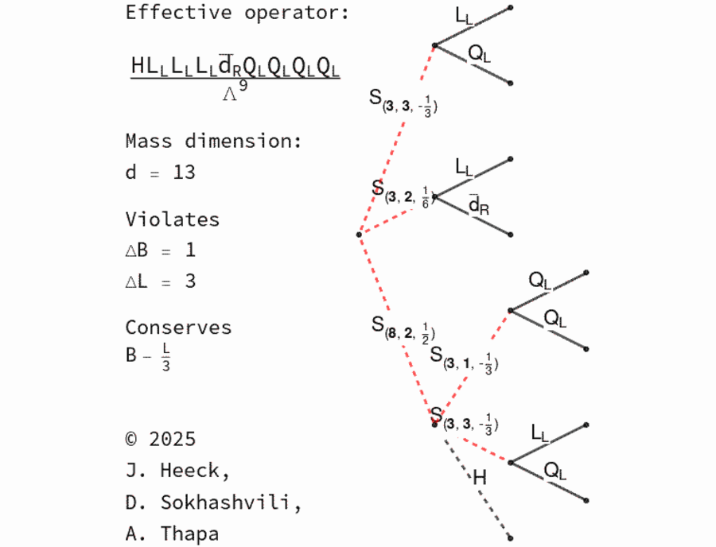
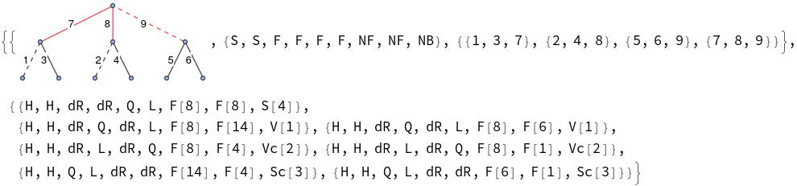

Code & supplementary material
Opening up baryon-number-violating operators
This page contains code and supplementary files for the article above. Large pre-generated data files are currently hosted on Box; the source code and Mathematica notebooks will be maintained in the GitHub repository.

Generating topologies
Generate_topologies.zip (60 kB) contains a pedagogical Mathematica notebook and FeynArts model file to generate tree-level topologies.
We provide all topologies up to mass dimension 15 used in the paper, as well as some topologies at lower mass dimension that are not relevant for baryon number violation but may be useful for other studies. Higher-dimensional topologies can be generated with the Mathematica notebook or provided by the authors on request.
File format
The Mathematica files are organized by the mass dimension of the associated non-derivative
operator and the number of external fermions and scalars. For example,
dim7_4F_1S.wl contains the two tree-level topologies for four external fermions
and one external scalar associated with a dimension-seven non-derivative operator.
Each entry consists of a Mathematica Graph object with labeled edges, a list of
external and internal particle types (S = external scalar/boson,
F = external fermion, NB = internal boson,
NF = internal fermion), and a list of vertices.

The corresponding compact text representation is, for example:
T[7][1] {"S", "F", "F", "F", "F", "NB", "NB"} {{2, 3, 6}, {1, 6, 7}, {4, 5, 7}}
T[7][2] {"S", "F", "F", "F", "F", "NF", "NB"} {{1, 3, 6}, {2, 6, 7}, {4, 5, 7}}
The first column defines the topology names T[mass dimension][unique integer];
the second and third columns match the corresponding entries in the Mathematica files.
Generating UV completions
The topologies can be used to UV-complete non-renormalizable effective-field-theory operators. In the paper we apply them to non-derivative baryon-number-violating νSMEFT operators up to mass dimension 15.
The BNV operators were generated with Sym2Int. The UV-completion notebook generates completions involving scalars, fermions, and vectors, and includes functions to check equivalence of UV completions, calculate amplitudes or operator expansions, test Higgs asymmetry, and draw the diagrams. It relies heavily on GroupMath.
The .wl archives grow rapidly with mass dimension. For example,
UV_Dim12_1B_1L.zip is about 186 MB compressed and 2.9 GB uncompressed.

Example of the compact data format
For a dimension-eight example, UV_Dim8_1B_1L_T3.dat contains entries of the form
O_{8,(1,1)}^1 F[8]F[8]S[4] F[8]F[14]V[1] F[6]F[8]V[1] F[4]F[8]V[2] F[1]F[8]V[2] F[4]F[14]S[3] F[1]F[6]S[3]
O_{8,(1,1)}^2 F[8]F[14]V[1] F[6]F[8]V[1] F[3]F[8]S[4] F[14]F[14]S[1] F[6]F[6]S[1] F[3]F[14]V[2] F[3]F[6]V[2]
Particle names such as F[8] and S[3] follow the naming scheme of the
article and notebook. A trailing c denotes charge conjugation.
Contact
Questions, corrections, and comments are welcome.
heeck@virginia.edu